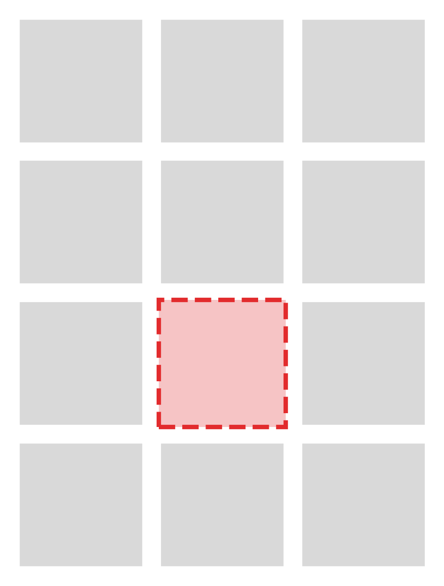
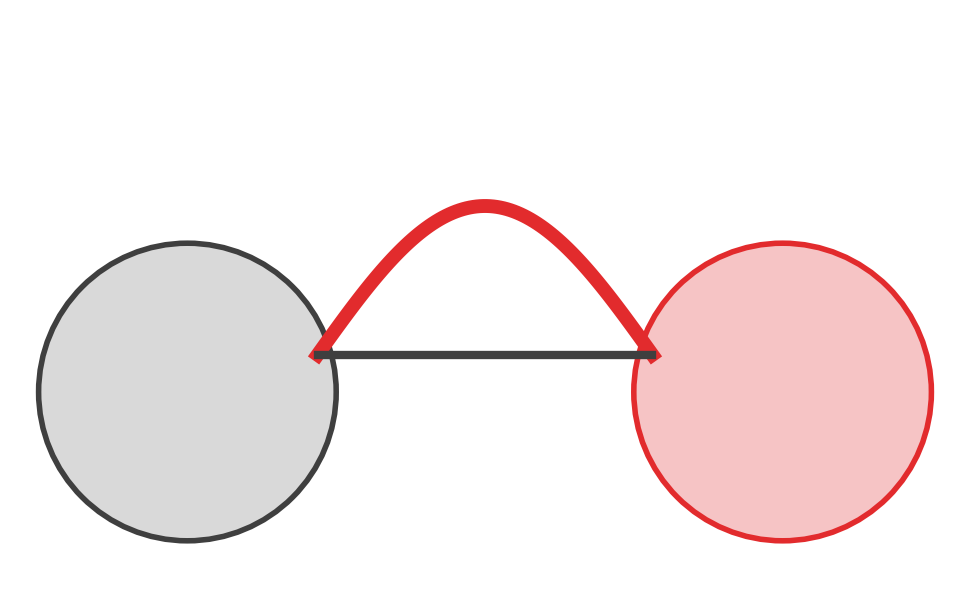

15
데이톨로지 — 데이터로 읽는 인간과 사회
주교재: 김성태, 『데이톨로지』 3부·에필로그 · 강사 : ○○○

CONTENTS

목표 1
딥필링 구현의 과제와 윤리적 쟁점 정리
목표 2
강의 전체를 “아름다운 거리”라는 태도로 통합
오늘의 질문
주식 수익률은 AI에게 물을 수 있음
그렇다면 결혼 상대는?
AI에게 맡길 수 없는 판단은 무엇일까?
[비유] 한 조각이 빠진 퍼즐
사진: romana klee / CC BY-SA 2.0
측정 · 개별성 · 맥락 · 과장 · 윤리
저자의 당부
“포기하자”가 아니라
“이 고민을 함께하고,
완벽한 AI라고 말하지 말자”
[비유] 지문
사진: kevin dooley / CC BY 2.0
같은 장례식, 다른 슬픔
미래의 과제 = 과거·현재에서 이미 만난 문제
6주 · 평균의 종말
9~10주 · 별점
13주 · 특이점
[비유] 숲속 다리
사진: pfly / CC BY-SA 2.0
15주 여정과 세 가지 질문
에필로그: 인간과 기술의 공존
한쪽만 옳다는 주장 경계 → 양극단 사이에서 접점 찾기
데이톨로지 리포트: 하나의 기술을 세 관점으로
1부 관점 · 과거
2부 관점 · 현재
3부 관점 · 미래
발표 운영과 평가 기준 (35%)
| 개념 적용 | 30점 · 15주 개념의 정확한 사용 |
|---|---|
| 데이터 근거 | 25점 · 출처·표본·수치의 명시 |
| 비판적 균형 | 25점 · 편익과 비용을 함께 다룸 |
| 전달력 | 20점 · 인포그래픽·발표 구성 |
오늘의 핵심 4줄
다섯 과제 = 측정 · 개별성 · 맥락 · 과장 · 윤리
개별성 = 같은 사건, 다른 감정 → 평균화 불가
당부 = 포기가 아닌 함께 고민, 과장 금지
데이톨로지 = 데이터를 아는 것 = 결국 인간을 아는 것
확인 문제
“어머니 장례식” 사례가 딥필링 구현에 던지는 과제
연구자·언론이 감정 AI를 “완성된 것처럼” 말할 때의 문제
저자가 말하는 “아름다운 거리”의 뜻
16주차: 기말 성찰 에세이
“나는 기술과 어떤
‘아름다운 거리’를 둘 것인가”A4 2쪽 · 성적의 15%
조건 1
조건 2
평가
마무리: 15주를 닫으며
16주차 기말 — 성찰 에세이 제출
사진 (Openverse 검색, CC 라이선스)